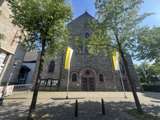
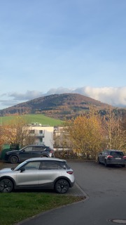
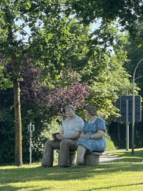
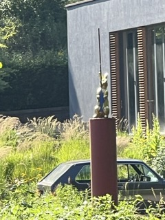
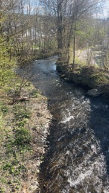
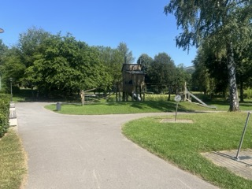

St. Alexander Kirche
Die St. Alexander Kirche gehört zu den bekanntesten Bauwerken der Stadt. Die katholische Kirche wurde in den Jahren 1905–1906 im neuromanischen Stil erbaut. Teile einer älteren Kirche aus dem 13. Jahrhundert sind bis heute erhalten geblieben. Sie befindet sich am Kirchplatz in der Schmallenberger Altstadt.

Wilzenberg
Der Wilzenberg ist mit 657 Metern einer der bekanntesten Berge im Sauerland. Auf seinem Gipfel befinden sich historische Ringwälle aus der Eisenzeit und dem frühen Mittelalter. Heute ist der Berg ein beliebtes Ziel für Wanderer und Besucher.

Skulptur „Lesendes Paar"
Die Skulptur „Lesendes Paar" steht im Kreisverkehr am ehemaligen Bahnhof in Schmallenberg. Sie gehört zu den Kunstwerken im Stadtgebiet und ist Teil des öffentlichen Stadtbildes.

Das Blaue Wunder
Im Lennepark befindet sich das Kunstwerk „Das Blaue Wunder" des Künstlers Heinrich Brummack. Die Skulptur zeigt einen goldfarbenen Hasen mit einem blauen Fisch und gehört zu den bekannten Kunstobjekten der Stadt.

Lenne
Die Lenne ist ein etwa 129 Kilometer langer Fluss in Nordrhein-Westfalen. Sie entspringt im Rothaargebirge und fließt auch durch Schmallenberg. Der Fluss prägt die Landschaft und gehört zum Erscheinungsbild der Region.

Kurpark Schmallenberg
Der Kurpark Schmallenberg, auch Lennepark genannt, liegt direkt an der Lenne. Er bietet Wege zum Spazieren, Sitzmöglichkeiten und Grünflächen zur Erholung und ist ein beliebter Ort für Besucher und Einwohner.